AI Academy · Level 4 · Grade 9 · Week 14 · Student lesson
Scores and Calibration Intuition
Learn to understand, design, build, test and explain AI systems responsibly.
Project: Responsible Plant Classifier
Before you start
AI-3 Week 2: probability is not a guarantee for one outcome.
Plan time to read, investigate and explain. Keep predictions separate from observations.
Student lesson · 1 of 14
Your mission
Your learning target
I can interpret calibration using groups of forecasts.
I can compare average predicted probability with observed frequency.
I can distinguish calibration from individual correctness.
Remember before reading
Close your notes first. A rough first answer helps us choose the right starting point; it is not a score for your ability.
Without opening the old lesson, explain one key idea from Train a Classifier. Give an example and a mistake that the idea helps you avoid.
Without opening the old lesson, explain one key idea from Decision Trees. Give an example and a mistake that the idea helps you avoid.
Without opening the old lesson, explain one key idea from Leakage. Give an example and a mistake that the idea helps you avoid.
After trying, check the relevant lesson or ask your teacher. Change the part of your explanation that the evidence shows was wrong.
A model score can rank predictions without matching the real frequency of correct outcomes.
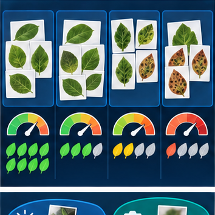
Builder name and experiment date:
Readiness for the connected explanation
Does a score necessarily represent a probability?
This week’s end goal
By the end, I can explain scores and calibration intuition using a traced example and a stated limitation.
Student lesson · 2 of 14
Notice the evidence
PICTURE ENTRY
Notice → Predict → Explain
Begin with visible evidence; do not explain more than the picture and information support.
Name three visible details without interpreting them.
Predict the data, model, or evaluation decision being made.
Identify one hidden assumption that could change the result.
State what evidence would confirm or reject your prediction.
My prediction and supporting evidence:
A closer explanation
If many comparable cases receive probability .8, a calibrated model should produce positives in roughly 80 percent of those cases over adequate data. It does not mean every case is 80 percent correct or that exactly eight of each next ten must be positive. Calibration is assessed across groups.
Use fictional classroom data throughout this investigation. Keep the task, units, reference labels and data split visible as you reason. Earlier weeks supplied the model-building process; this week examines calibration as a group property.
Student lesson · 3 of 14
See how it works
ML MECHANISM
Input → Model → Evidence
Trace the information, fitted behavior, and evaluation proof separately.
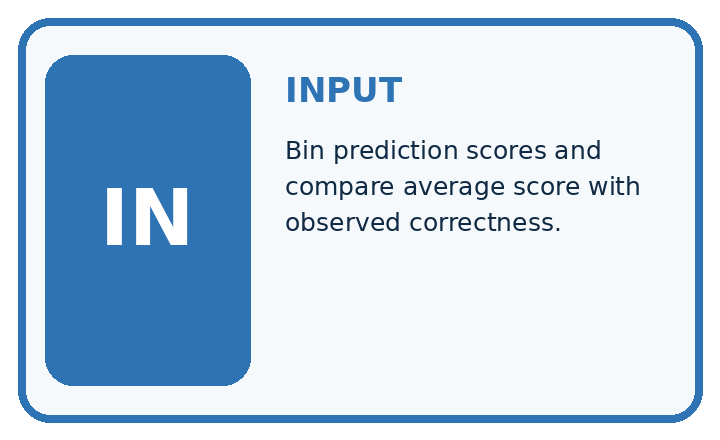
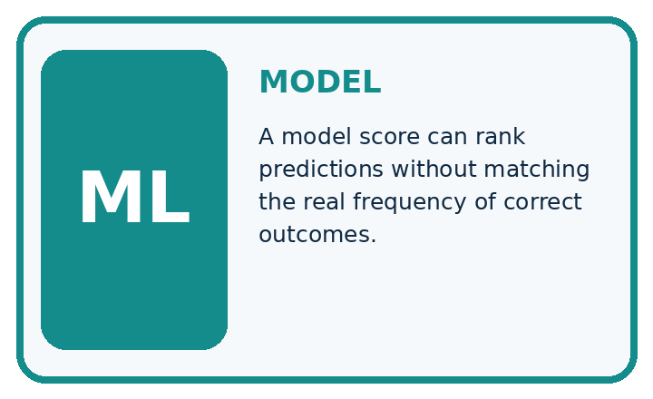
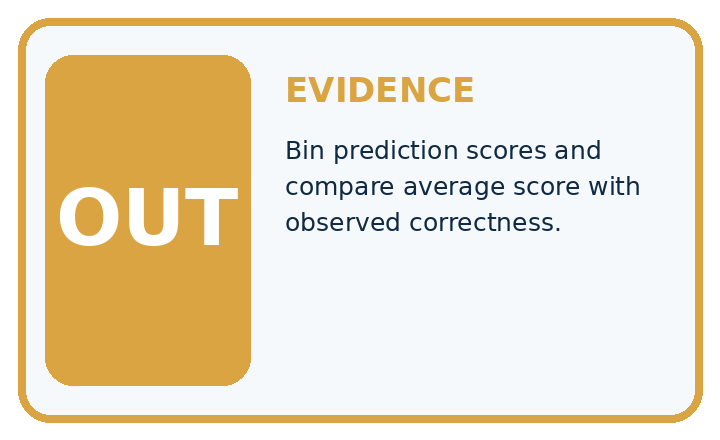
QUESTION Bin prediction scores and compare average score with observed correctness.
MODEL IDEA A model score can rank predictions without matching the real frequency of correct outcomes.
PROOF NEEDED Use an unseen case, visible calculation, error analysis, and a stated limitation.
Draw a fresh data → model → prediction → evaluation trace:
A closer explanation
In a fictional held-out check, ten cases all have predicted probability .2 and two are positive. Another ten all have probability .8 and six are positive. Average predictions are .2 and .8; observed frequencies are 2/10=.2 and 6/10=.6. The second group is overconfident for positives in this sample.
groups = [(0.2, 10, 2), (0.8, 10, 6)]
for score, count, positives in groups:
if count == 0:
print("No evidence in this group")
else:
print(score, positives / count)
# Compare each score with its observed fraction.
# A group fraction is not an individual guarantee.Trace the calculation on paper before running this optional Python check. Use the stated fictional inputs and compare intermediate values. The code checks this example; your independent workbook case uses different evidence.
Connect the picture and the explanation
Point to the input, the deciding step and the result in this week’s visual. Explain the same step in ordinary words. A picture helps when you can say what each part represents.
Student lesson · 4 of 14
Compare the cases
EVALUATION DESIGN
Four Tests, Four Kinds of Evidence
A system is not understood until it survives more than one comfortable example.


NORMAL Expected data and expected behavior.
BOUNDARY Value close to a threshold, ambiguous label, or uncertain prediction.
MISSING Necessary field, label, source, or measurement is unavailable.
SHIFTED New lighting, species, device, subgroup, or time condition.
Which case most threatens today's claim, and why?
Change one thing in the pictured case
Change: The 0.2 group has two spotted cases instead of four.
Prediction: Its observed fraction becomes 0.2 and matches the supplied score in this group.
Reason: Calibration compares stated probabilities with group outcome frequencies.
Student lesson · 5 of 14
Words that unlock the idea
VOCABULARY
Words You Can Calculate and Defend
A definition matters when it lets you interpret a new dataset, model, or result.
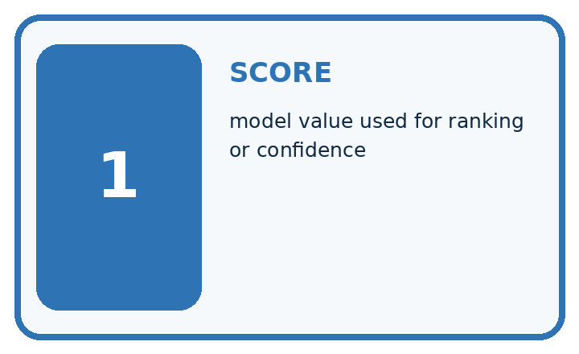
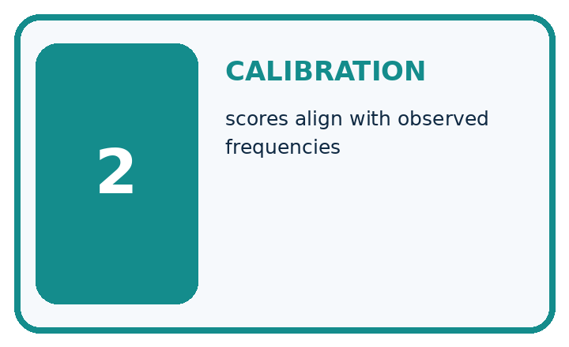
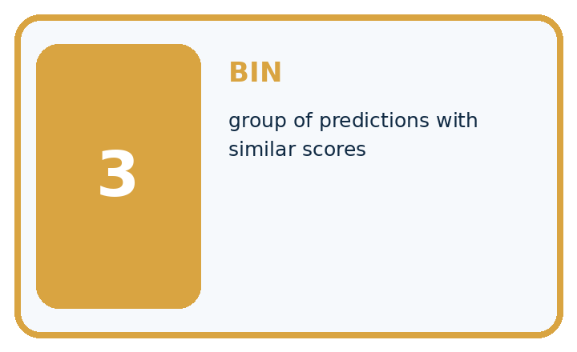
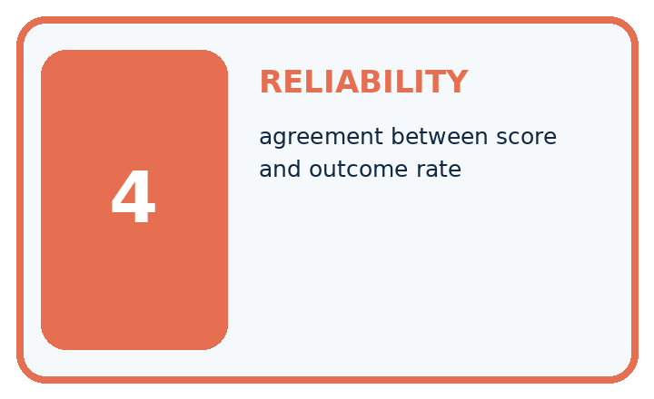
| Term | Precise meaning | My ML example |
|---|---|---|
| score | model value used for ranking or confidence | |
| calibration | scores align with observed frequencies | |
| bin | group of predictions with similar scores | |
| reliability | agreement between score and outcome rate |
Repair the claim using a definition, calculation, or test record:
Words used in the closer explanation
| Word | Meaning |
|---|---|
| Calibration | Agreement between predicted probabilities and outcome frequencies across comparable groups |
| Bin | A declared interval grouping predictions |
| Observed frequency | Positive outcomes divided by cases in a group |
| Reliability diagram | A plot comparing group average prediction with observed frequency |
Student lesson · 6 of 14
Follow a worked example
WORKED EVIDENCE
Reason Step by Step
Predict first. Then check each step. A correct answer without visible evidence cannot be audited.
Four-step worked evidence for Week 14: Scores and Calibration Intuition
STEP 1 Each score estimates the probability that the selected label is correct. Ten predictions have such scores near 0.8.
STEP 2 Only six are correct, so observed correctness is 6 ÷ 10 = 60%.
STEP 3 The score ranking may still help, but 0.8 should not be stated as an 80% guarantee.
STEP 4 Use bins across many cases and design an uncertain zone requiring human review.
Recalculate, retrace, or restate the evidence independently:
A closer explanation
Calibration as a group property at a glance
Learn from the worked case
Cover the result before checking it. Say what is given, choose the procedure, and follow one step at a time. Then uncover the result and explain your first mismatch. Ask why a step is allowed, not only what number it produces.
A pictorial worked case: Scores and Calibration Intuition
Treat calibration as a comparison across groups of probability scores.
The facts we will use
Toy classifier outputs p(spotted)=0.8 on ten cases; eight are actually spotted. Another ten have p=0.2; four are spotted.
All inputs and outcomes in this worked example are invented classroom data; no real model run is claimed.

Read the picture one step at a time
Why this result follows
Read the picture in order. The 0.8 group matches here; the 0.2 group understates the observed fraction by 0.2. The arrows show which recorded input or intermediate result each decision uses. Explain the deciding step aloud before checking the changed case; pointing to the final answer alone does not show how it follows.
What this example does not establish
Ten cases per group provide noisy evidence; the exercise does not establish calibration on every score or setting.
Student lesson · 7 of 14
Find and repair a mistake
ERROR DETECTIVE
Compare → Diagnose → Repair
Do not patch the answer. Find the earliest unsupported assumption, data problem, or experiment error.
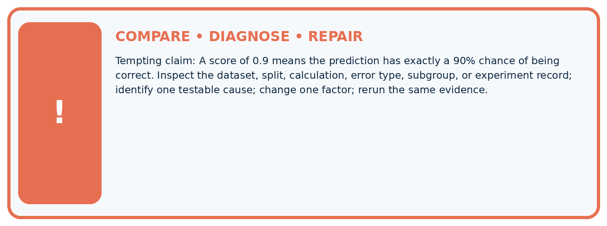
| Evidence record | Expected | Actual | Likely cause / next test |
|---|---|---|---|
| normal case | passes | ||
| boundary case | defined behavior | ||
| missing case | safe fallback | ||
| shifted case | measured limit |
Diagnose one cause and name the cleanest next experiment:
A closer explanation
Bin boundaries, group sizes and dataset coverage affect the picture. Do not fit adjustments on the final test or claim certainty from a small bin. Real distributions can change, and a calibrated model on one population may not remain so elsewhere.
Student lesson · 8 of 14
Practise together
ML STUDIO
Specify Before You Run
A trustworthy result can be reproduced from the recorded data, code, settings, and evaluation rule.

Experiment record
QUESTION + intended use + success threshold
DATA version + grouped split + leakage check
CODE/preprocessing + features + model + settings + seed
METRICS + positive class + units + denominators
PREDICTIONS + errors + subgroup slices + limitations
HUMAN reviewer + release, revise, limit, or stop decision
Write the minimum record needed to reproduce today's result:
A closer explanation
If every case gets .5 and exactly half are positive, overall calibration can look good while the model cannot rank easy and difficult cases. Conversely, useful ranking can coexist with poor probabilities. Report discrimination and calibration separately. Fit any calibration adjustment on development data reserved for that purpose, then evaluate on separate data.
Practise with less help: Locate the discrepancy
Use workbook W2 for the connected example “Calibration as a group property”. First fill the input and rule boxes. Try the middle steps before asking for a hint. After a hint, try the next step yourself.
| Plan | Do | Check |
|---|---|---|
| What is given? Which rule or procedure applies? | Record each intermediate step. | Does the result follow? What remains unknown? |
Explain your trace to a partner. Your partner points to one step to check. Swap roles on the next case. Each person writes their own explanation.
Check your reasoning
Use the worked case for Calibration as a group property. Proposed explanation: “A final answer is enough”. Decide whether this explanation is supported. Point to the step or supplied fact that decides; explain your repair if needed.
Answer on your own before discussion. If you are unsure, say which step you need help with.
Explain the picture
Does a calibrated 0.8 score mean every such leaf is spotted? Point to the relevant step in the picture, then write the changed result and the rule or evidence that supports it.
This is supported practice. Keep the separately named independent case for an attempt before feedback.
Student lesson · 9 of 14
Run the investigation
EVIDENCE LAB
Predict → Run → Calculate → Interpret
Keep the test conditions fixed, record every result, and change only one planned factor.
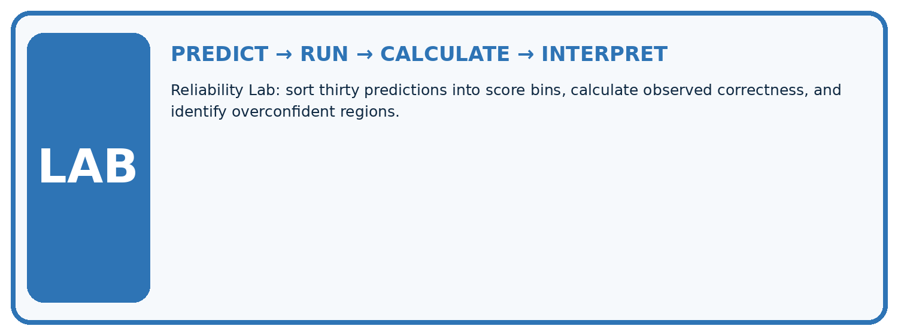
1. Write the hypothesis and expected evidence before running.
2. Reliability Lab: sort thirty predictions into score bins, calculate observed correctness, and identify overconfident regions.
3. Run one normal, one boundary, one missing, and one shifted case.
4. Calculate the metric from raw counts or row-level errors.
5. Interpret what changed, what did not, and what remains unsafe or unknown.
| Case | Prediction | Actual | Calculation / evidence | Meaning / next test |
|---|---|---|---|---|
| Normal | ||||
| Boundary | ||||
| Missing | ||||
| Shifted |
Plan → try → check
Before trying: what do I expect, and why? While trying: which step could first go wrong? Afterwards: what did I actually observe, and what should change? Keep “not run” if you only traced the procedure.
Student lesson · 10 of 14
Build your understanding
MASTERY
From Knowing the Word to Owning the Idea
Move upward only when you can produce evidence without copying the example.

DEFINE Use all four terms precisely: score, calibration, bin, reliability.
CALCULATE Reproduce the worked evidence with units and denominator.
TRACE Explain the data, code or decision path.
DIAGNOSE A score of 0.9 means the prediction has exactly a 90% chance of being correct.
TRANSFER Solve a fresh dataset or model case.
IMPROVE Change one cause and rerun fixed evidence.
DEFEND State intended use, metric, limitation, and human responsibility.
Student lesson · 11 of 14
Connect your project
CUMULATIVE PROJECT
Responsible Plant Classifier
Every week adds one reviewable artifact to the same evidence-based capstone.
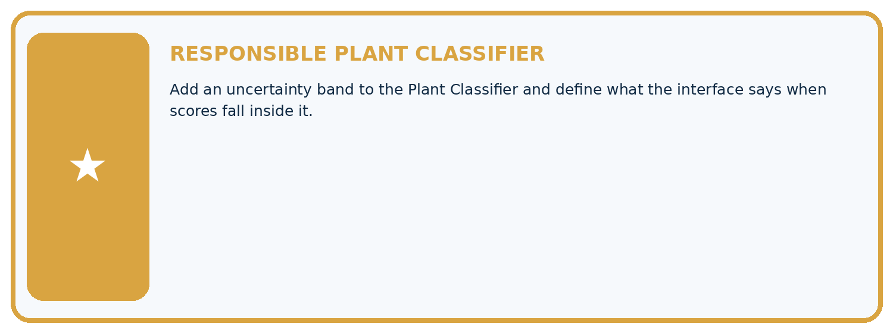
Which requirement or risk does this artifact address?
Which dataset, split, code, and metric version does it use?
What normal and shifted cases were tested?
What remains uncertain or weak?
What decision still belongs to a teacher or qualified human?
My evidence-linked project decision:
Evidence for your project
For your Responsible Plant Classifier, save the input, procedure, observed result and limitation of this check. Label this worked example as practice; use a different, previously unreviewed case when checking independent understanding.
Student lesson · 12 of 14
Show what you know
INDEPENDENT PROOF
Explain • Calculate • Transfer • Defend
Complete this with a fresh case after guided practice and compare it with the mastery criteria.
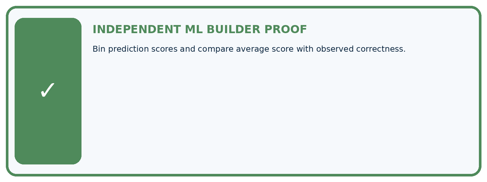
□ Define the task, feature/target roles, and intended-use boundary.
□ Show the calculation, code trace, or experiment record.
□ Test a normal case and one revealing boundary, missing, or shifted case.
□ Diagnose one failure without changing several factors at once.
□ Name a limitation, fairness concern, and the human-review action.
Independent evidence and defense:
My level: □ Not yet □ With one hint □ Independently □ I can teach and defend it
Student lesson · 13 of 14
Study a complete case
Week 14 Worked case
Use the supplied details to practise the weekly concept before attempting the independent question. This case extends the illustrated lesson.
The situation
Ten cases receive probability .8 for spotted; eight are spotted.
The question
Interpret calibration and its limits.
Worked explanation
8/10 matches .8 in this tiny bin. It illustrates calibration, not proof of global calibration or individual certainty; test more bins and data.
Explain it in your own words
Which detail supports the answer, and why does it matter?
Trace the supplied case visually
Compare a score bin with observed frequency
| Evidence or stage | Value or result |
|---|---|
| Spotted among score-0.8 cases | 8/10 |
Ten cases receive probability .8 for spotted; eight are spotted.
Interpret calibration and its limits.
8/10 matches .8 in this tiny bin. It illustrates calibration, not proof of global calibration or individual certainty; test more bins and data.
Student lesson · 14 of 14
Try a new case independently
Independent case: Apply independently
Twenty cases all predict .3 with eight positives; ten all predict .7 with seven positives. Give plot points and interpret.
Attempt this case before feedback. Record any help. Earlier examples below are further practice; a case already practised with feedback cannot establish fresh transfer.
Week 14 Independent application
Close the worked explanation. Apply the idea to this different question without copying.
Among 20 predictions with score 0.8, 12 are correct. What is observed accuracy in this group and how does it compare with 0.8?
My answer, with a trace, calculation or supporting evidence
Create and test
Change one relevant detail. Predict the result before testing. Include a boundary or missing-information case when it helps reveal a limit.
My changed input and expected result
Connect to your project
Add an uncertainty band to the Plant Classifier and define what the interface says when scores fall inside it.
The evidence I will keep
Your teacher has the independent answer and scoring criteria. Complete the matching workbook week to keep your practice evidence together.
Transfer practice from the original programme
Twenty cases receive score .7 and fourteen are correct. Explain what the observed rate suggests and what it does not establish about another score group.
Use feedback to improve
Attempt the independent case before hints. Record whether you worked alone, used a hint or followed a model. After feedback, fix the first unsupported step and explain why it changed. A later check uses a changed case, not a copied answer.